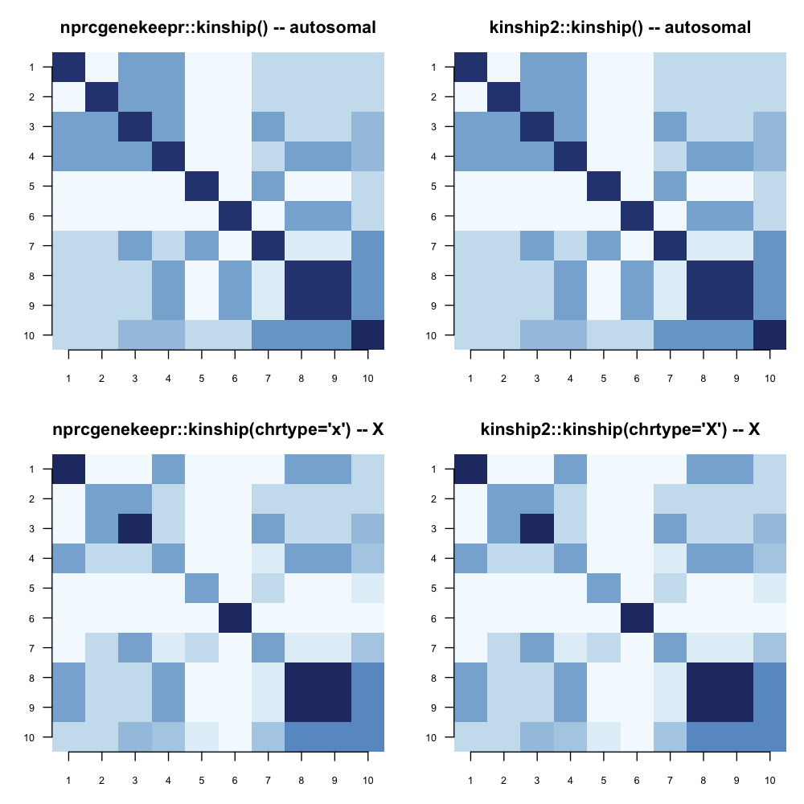
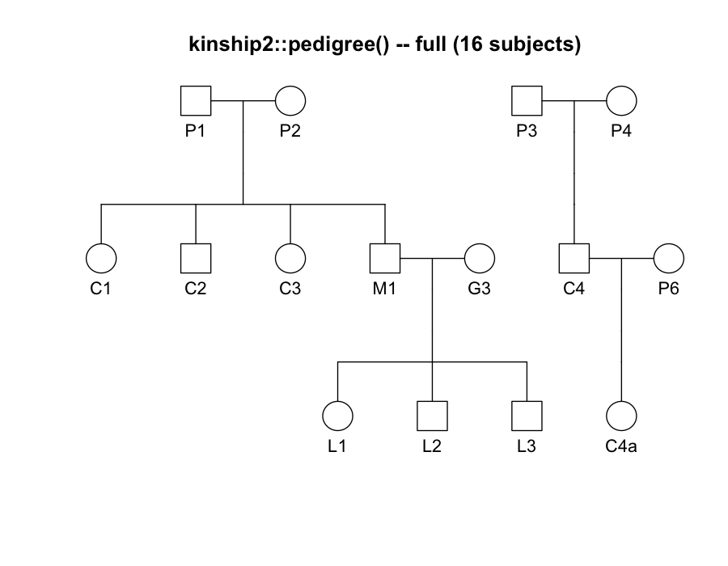
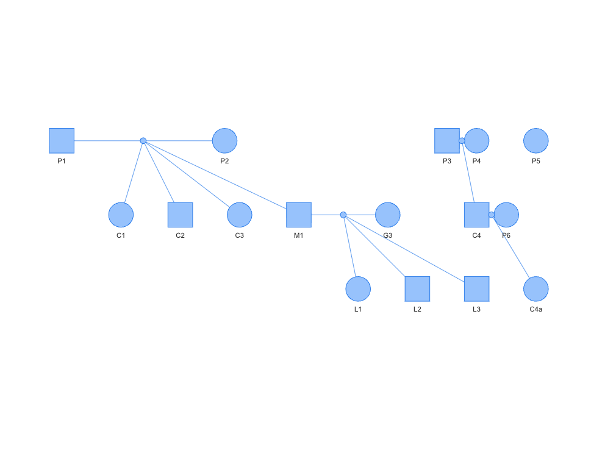
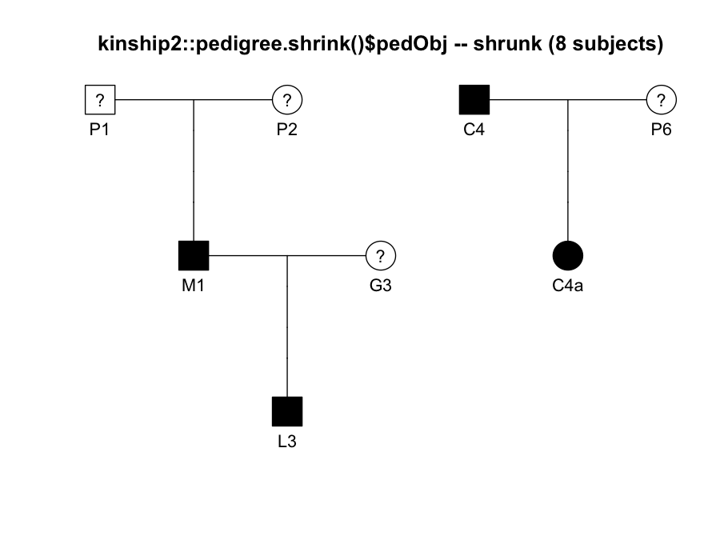
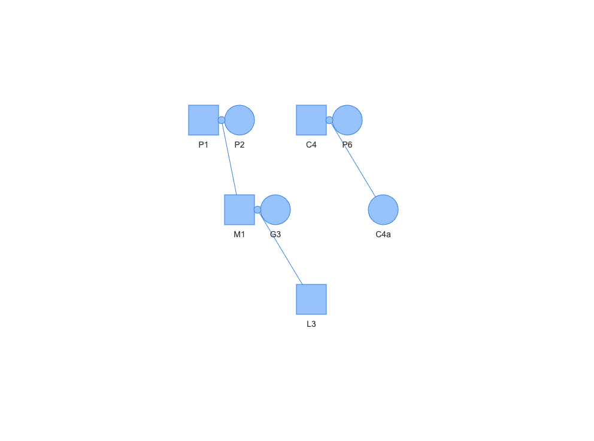
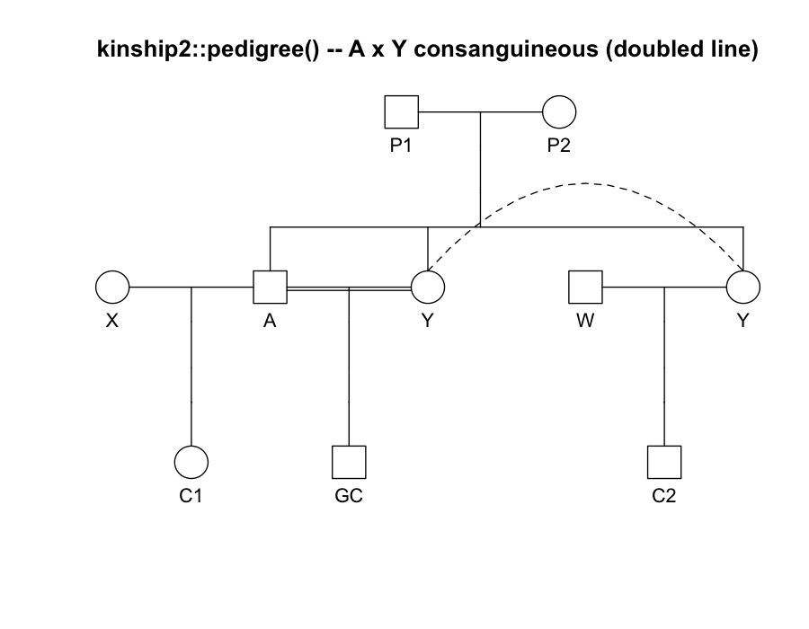
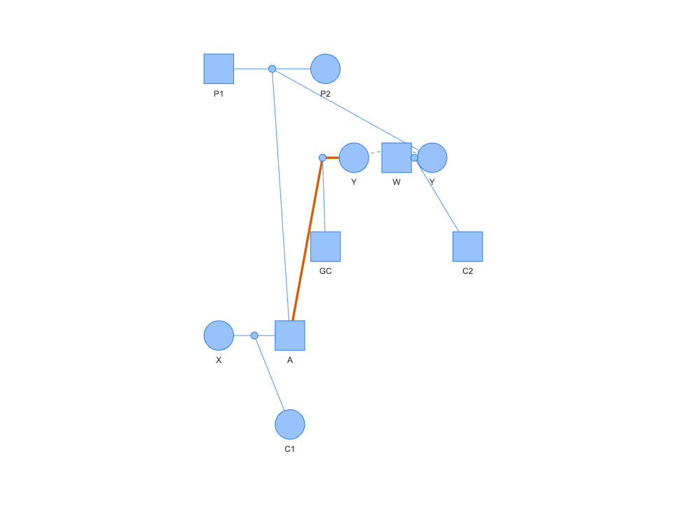
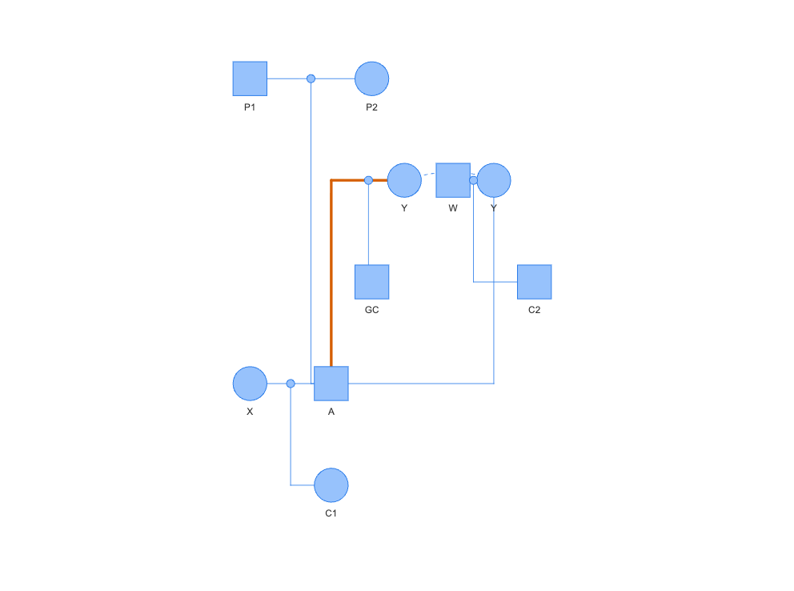

# Reproduce (build-ignored; not run on render). Requires kinship2 installed
# locally (install.packages("kinship2")) and Chrome (chromote, an indirect
# Suggests dependency via shinytest2, for the nprcgenekeepr diagram
# screenshots):
# Rscript data-raw/kinship2FidelityValidation.R
# Writes PNGs to vignettes/articles/kinship2-fidelity-validation-img/ and
# prints the numeric summary below to the console.Why this article exists
The kinship2 R package is the field’s standard reference implementation for pedigree kinship computation and pedigree drawing (Sinnwell, Therneau & Schaid 2014). Its own supplementary material (Sinnwell, Therneau & Schaid, “The kinship2 R Package for Pedigree Data: Supplementary Material”) works a small, fully-specified 10-subject example pedigree through kinship2’s own kinship matrix, X-chromosome kinship matrix, and pedigree-trimming (“shrink”) functions.
The ratified kinship2 supplement full-reproduction plan closed 3 tracks against that supplement:
-
Track A –
kinship()gainedchrtype = c("autosome", "x")andsexarguments, reproducing the supplement’s X-chromosome kinship matrix (Table S2). -
Track B – new
shrinkPedigree(), akinship2::pedigree.shrink()equivalent over this package’s ownid/sire/damdata-frame pedigree representation. -
Track C –
makePedigreeMatingLayout()’s consanguineous-mating visual marker (a distinct color/width on a blood-related couple’s mate-line edges) now propagates correctly ontoedgeStyle = "rectilinear"’s dogleg-rerouted projection edges, not just the direct-style case.
Each track’s own implementing session (Track C: S563, Track A: S564, Track B: S565) verified its own fixtures against a live, installed kinship2 1.9.6.2 and recorded the results as hardcoded expected values in tests/testthat/test_kinship.R, test_shrinkPedigree.R, and test_makePedigreeMatingLayout.R. This article is the recorded, side-by-side evidence for a reader who was not in those sessions: for each track, the exact same fixture is run through both packages, live, and the numeric and graphic output is shown together, not just asserted equal in a test file. It is the same “validate before expose” discipline as fg-se-validation.qmd, applied to a reference package instead of a reference paper’s worked numbers.
kinship2 is not a dependency of nprcgenekeepr. Every comparison below was generated once, offline, by data-raw/kinship2FidelityValidation.R (kinship2 installed locally, used interactively – matching the same evidence standard and the same “no new Suggests dependency” choice the 3 tracks’ own implementing sessions already made) and the resulting numbers/images are embedded below, exactly as fg-se-validation.qmd embeds its own offline validation study’s results rather than recomputing them at render time.
Track A – X-chromosome kinship (Table S2)
Fixture
The kinship2 supplement’s own Figure S1 subset (reconstructed from Table S1’s printed kinship values, per KINSHIP2_SUPPLEMENT_REPRODUCIBILITY_AUDIT_2026-08-13.md): a 10-subject pedigree in which subjects 8 and 9 are full siblings declared as a monozygotic (MZ) twin pair, and subject 10 is a child of twin 8 – the load-bearing case for confirming a twin correction propagates to a non-twin descendant, not just the declared pair.
Numeric fidelity
Both packages compute the full 10x10 autosomal matrix and the full 10x10 X-linked matrix on the identical fixture (nprcgenekeepr’s own MZ-twin correction supplies the same relation/twinRelations declaration to each package in its own idiom):
| Comparison | max|nprcgenekeepr − kinship2| | Identical? |
|---|---|---|
| Autosomal kinship matrix (100 cells) | 0 | Yes |
| X-linked kinship matrix (100 cells) | 0 | Yes |
A few named cells, reproducing the supplement’s own Table S2 (self-kinship differs by sex on the X chromosome – a male’s self-kinship is 1.0, not 0.5, since he carries a single X copy):
| Pair | Relationship | nprcgenekeepr | kinship2 |
|---|---|---|---|
| (1, 1) | male self | 1.0000 | 1.0000 |
| (2, 2) | female self | 0.5000 | 0.5000 |
| (1, 3) | father-son | 0.0000 | 0.0000 |
| (1, 4) | father-daughter | 0.5000 | 0.5000 |
| (8, 9) | declared MZ twins, X-linked | 1.0000 | 1.0000 |
| (9, 10) | twin correction propagated to a child | 0.5625 | 0.5625 |
Graphic fidelity

Track B – shrinkPedigree() vs. pedigree.shrink()
Fixture
The composite 16-subject fixture from test_shrinkPedigree.R, constructed to exercise every removal phase of kinship2’s own algorithm in one pedigree: an unavailable (ungenotyped) terminal leaf, an unavailable founder couple with a single child, a childless “stray marry-in” founder, a genotyped but non-informative individual, and a priority-ordered affected-status reduction down to maxBits = 1.
Numeric fidelity
| Comparison | nprcgenekeepr | kinship2 | Match? |
|---|---|---|---|
| Surviving subject set (8 of 16) | C4, C4a, G3, L3, M1, P1, P2, P6 |
C4, C4a, G3, L3, M1, P1, P2, P6 |
Yes |
bitSize trajectory |
11 → 7 → 5 → 3 → 1 |
11 → 7 → 5 → 3 → 1 |
Yes |
Graphic fidelity
The same fixture, before and after shrinking, rendered by both packages. kinship2’s own plot.pedigree() did not plot subject P5 (an isolated, mate-less, child-less founder) – expected behavior for a disconnected singleton, not an error.

plot.pedigree() on the full 16-subject fixture.
makePedigreeMatingLayout() + visNetwork on the same full 16-subject fixture.
pedigree.shrink()$pedObj – shrunk to 8 subjects. Unavailable (‘?’) individuals still shown, per kinship2’s own convention.
shrinkPedigree()’s own surviving pedigree, same 8 subjects, rendered the same way.The two shrunk diagrams show the same 8 surviving subjects in the same 2 family groups – {P1, P2, M1, G3, L3} and {C4, P6, C4a} – confirming the numeric surviving-set match above is also structurally faithful, not just a matching id list.
Track C – consanguineous-marker propagation
Fixture
The 9-subject dogleg fixture from test_makePedigreeMatingLayout.R (S563): A and Y are full siblings (children of P1 x P2) who mate with each other – the consanguineous union under test – while A also anchors an unrelated union with founder X, and Y also anchors an unrelated union with founder W. A’s own display generation is pulled away from the consanguineous union’s generation by the A x X union, forcing exactly one edgeStyle = "rectilinear" “dogleg” reroute on A’s side only.
Graphic fidelity
kinship2 draws a consanguineous mating as a doubled connecting line between the two mates (visible directly between A and the left-hand Y) and – independently of anything to do with consanguinity – duplicates any individual who appears in more than one union (Y appears twice, joined by a dashed connector). makePedigreeMatingLayout() uses a distinct color and width on the consanguineous union’s own edges and also independently duplicates a multi-union individual with a dashed connector – the two packages converge on the same duplicate-node convention without having copied it from one another.

plot.pedigree(). The doubled line directly between A and the near Y node is kinship2’s consanguinity marker; the dashed arc connects Y’s two appearances (one per union she anchors).
makePedigreeMatingLayout(edgeStyle = "direct") – the A-Y union’s 2 mate edges render in vermillion (#D55E00) at width 4.
makePedigreeMatingLayout(edgeStyle = "rectilinear") – the same marker now propagates onto A’s dogleg-rerouted projection edges (this session’s own fix), not just Y’s non-doglegged side.| Edge style | Marked (vermillion) edges | Expected |
|---|---|---|
direct |
2 | 2 (one edge per mate, no dogleg) |
rectilinear |
3 | 3 (A’s 1 edge splits into 2 dogleg segments; Y’s 1 edge is unaffected) |
Both packages flag the same union as consanguineous, using their own independent visual conventions – a thickened doubled line in kinship2, a distinct color and width in nprcgenekeepr – and nprcgenekeepr’s marker survives the more complex rectilinear dogleg reroute exactly as it does the simple direct case.
Caveats carried forward
-
kinship2 is not a package dependency. Nothing above runs at
quarto rendertime or inR CMD check– the numbers and images are the frozen output of one offline, interactively-run script, matching this package’s established precedent of never callingkinship2::live from committed test or documentation code. -
The full 17-subject
fam1pedigree from the kinship2 supplement’s main worked example is not reconstructable from this repository’s materials (its source figure lives in the kinship2 application note, not the supplement PDF this repository ships). Track A’s fixture is the fully-specified 10-subject Figure S1 subset, per the audit’s own scope caveat – not a limitation introduced by this article. -
Tracks B and C have no PDF-printed worked example at all – the supplement names only which subjects a shrink trims, never their relationships, and says nothing about visual conventions. Both tracks’ ground truth is a live, installed
kinship2::pedigree.shrink()/plot.pedigree()run on a fixture purpose-built to exercise the relevant algorithm, not a supplement-sourced value. -
kinship2::pedigree()’s sex-role validation is stricter than nprcgenekeepr’s own sire/dam columns. Track C’s own committed test fixture lists one individual (Y) as asirein one row despite her declared sex being female – valid input tomakePedigreeMatingLayout(), which does not enforce sex/column-role consistency, but rejected bykinship2::pedigree(), which does. The validation script swaps that one row’s 2 column values (same 2 parents, same family structure) only for the kinship2-side object; every nprcgenekeepr call in this article uses the fixture exactly as committed.
Verdict
PASS, all 3 tracks. Track A’s autosomal and X-linked kinship matrices are bit-for-bit identical to kinship2’s own output across every one of 200 compared cells (100 autosomal + 100 X-linked), including the MZ-twin correction and its propagation to a descendant. Track B’s shrinkPedigree() reproduces kinship2’s exact surviving subject set and exact bitSize trajectory, and the shrunk pedigrees are visually the same 2 family groups. Track C’s consanguineous-mating marker flags the same union kinship2 flags, under both edge styles, using an independently-converged duplicate-node convention for the same underlying multi-union case kinship2 also duplicates. All 3 tracks are cleared as faithful reproductions of the kinship2 supplement’s own results, not just internally self-consistent implementations.
References
Sinnwell, J.P., Therneau, T.M., Schaid, D.J. (2014) “The kinship2 R package for pedigree data.” Human Heredity 78(2):91-93.
Sinnwell, J.P., Therneau, T.M., Schaid, D.J. “The kinship2 R Package for Pedigree Data: Supplementary Material.” Mayo Clinic (PMC manuscript NIHMS593658); shipped in this repository at inst/extdata/reference/NIHMS593658-supplement-supplement_1.pdf.
See also kinship(), shrinkPedigree(), makePedigreeMatingLayout(), and kinship2-supplement-full-reproduction-plan.md.